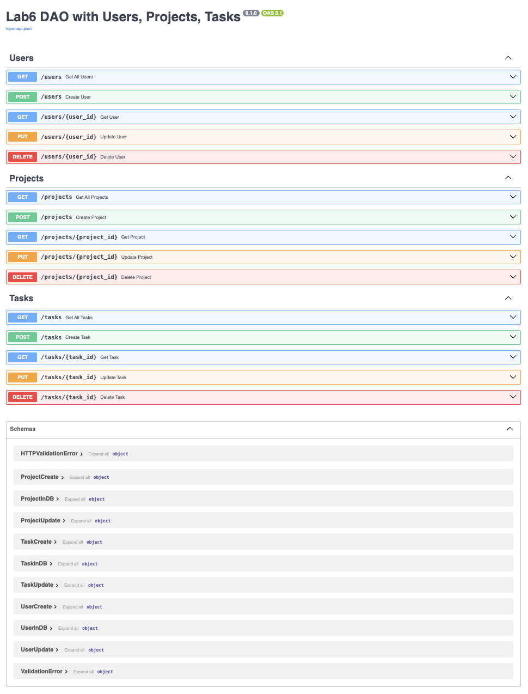

Виконали
студент 2-го курсу, групи ІО-34 Шевченко Дмитро
Telegram: @muddotaa
студент 2-го курсу, групи ІО-34 Зернишкин Ілля
Telegram: @Zenzoik
студент 2-го курсу, групи ІО-34 Юзько Богдан
Telegram: @bhdnyys
студент 2-го курсу, групи ІО-34 Хабаров Артем
Telegram: @artemkhabarov1
студентка 2-го курсу, групи ІО-34 Кашканова Дарина
Telegram: @wendigo_25
студентка 2-го курсу, групи ІО-34 Крисько Марія
Telegram: @masha3happy
студентка 2-го курсу, групи ІО-34 Менчинська Діана
Telegram: @blinyshka
студентка 2-го курсу, групи ІО-34 Одинюк Олександра
Telegram: @wyrais
Керівник
доцент кафедри ОТ ФІОТ, к.т.н., доцент Андрій БОЛДАК
НТУУ "КИЇВСЬКИЙ ПОЛІТЕХНІЧНИЙ ІНСТИТУТ імені ІГОРЯ СІКОРСЬКОГО
Факультет інформатики та обчислювальної техніки
Кафедра обчислювальної техніки
Київ
Вступ
У вступі описується мета роботи і розглядається поставлене завдання з позиції її актуальності, значення її розв’язання для тієї предметної області, до якої відноситься тема бакалаврського проєкту.
Коротко характеризується сучасний рівень розв’язання даного завдання і взаємозв’язок з іншими проєктами по цій тематиці.
Наводяться основні технічні характеристики розробки й очікуваний технічно-економічний ефект від її реалізації.
Розроблення загальних вимог до системи
Аналіз предметної області
Вступ
У сучасному світі, де інформаційні потоки зростають експоненціально, ефективний аналіз медіа-контенту стає ключовим завданням для багатьох галузей. Він використовується в журналістиці, маркетингу, соціології, політичних дослідженнях, безпеці та багатьох інших сферах. Традиційні методи аналізу медіа-контенту, такі як контент-аналіз та аналіз дискурсу, дозволяють виявити тенденції, ідеологічні зрушення та закономірності у представленні певних тем у медіапросторі. Водночас сучасні технології, зокрема автоматизовані методи, машинне навчання та обробка великих даних, значно розширюють можливості аналітики. Автоматизовані системи можуть швидко обробляти великі масиви інформації, визначати тональність текстів, ідентифікувати ключові теми та навіть прогнозувати реакцію аудиторії на певний контент. У даному документі розглянуто різні підходи до аналізу медіа-контенту, включаючи традиційні та автоматизовані методи. Особлива увага приділена сучасним технологіям, таким як машинне навчання, обробка великих даних та аналіз соціальних мереж. Також проводиться порівняльна характеристика існуючих інструментів та систем, що використовуються для аналізу контенту.
Основні визначення
- Контент-аналіз [1] – метод дослідження текстової або візуальної інформації, що включає виявлення та підрахунок певних елементів у медіа-контенті.
- Кількісний контент-аналіз [2] – підхід, що фокусується на статистичному підрахунку частоти появи певних слів, тем або символів у тексті.
- Якісний контент-аналіз [3] – метод, що передбачає інтерпретацію контексту, значень і тональності текстів чи інших медіа-матеріалів.
- Аналіз дискурсу [4] – метод, що передбачає інтерпретацію контексту, значень і тональності текстів чи інших медіа-матеріалів. – дослідження способів використання мови у соціальних і культурних контекстах, що впливає на формування суспільної думки.
- Автоматизований контент-аналіз [5] – застосування алгоритмів та штучного інтелекту для обробки та аналізу великих обсягів медіа-даних.
- Обробка природної мови (NLP) [6] – технологія, що дозволяє комп'ютерам розуміти, інтерпретувати та генерувати людську мову.
- Big Data (великі дані) [7] – обсяг інформації, що перевищує можливості традиційних методів обробки та вимагає спеціалізованих технологій аналізу.
- Машинне навчання – [8] підхід до аналізу даних, при якому алгоритми самостійно навчаються знаходити закономірності та приймати рішення на основі даних.
- Соціальні графи – [9] моделі зв'язків між користувачами соціальних мереж, що використовуються для аналізу взаємодій та виявлення впливових осіб.
Підходи та способи вирішення завдання
1. Традиційні підходи аналізу медіа-контенту:
- Кількісний контент-аналіз – фокусується на підрахунку частоти появи певних тем, слів або символів у тексті. Він дозволяє виявити закономірності та тенденції в медіа-контенті.
- Якісний контент-аналіз – передбачає глибоке вивчення змісту повідомлень, включаючи аналіз контексту, інтонацій та прихованих смислів. Він спрямований на розуміння цінності та значення контенту.
- Аналіз дискурсу – досліджує, як мова використовується для передачі соціальних та культурних значень, а також як вона впливає на формування громадської думки.
2. Автоматизовані підходи аналізу медіа-контенту:
- Автоматизований контент-аналіз – використовує обчислювальні алгоритми для аналізу та вилучення значущої інформації з великих обсягів текстового, аудіо- чи візуального контенту. Він застосовує обробку природної мови (NLP), машинне навчання та інтелектуальний аналіз даних для автоматичної категоризації, класифікації та узагальнення контенту.
- Аналіз соціальних мереж – включає моніторинг та аналіз взаємодій користувачів у соціальних мережах, виявлення трендів, аналіз популярності контенту та оцінку впливу на аудиторію.
- Обробка великих даних (Big Data) – використовує технології для збору, зберігання та аналізу великих обсягів неструктурованих даних, що дозволяє виявляти приховані закономірності та тенденції в медіа-контенті.
- Машинне навчання та штучний інтелект – застосовують алгоритми для класифікації контенту, виявлення тональності, розпізнавання зображень та відео, а також прогнозування поведінки аудиторії.
3. Способи вирішення завдання:
3.1 Використання нейронних мереж:
- BERT, GPT – для розуміння контексту тексту.
- CNN – для розпізнавання об'єктів у зображеннях.
- LSTM, GRU – для аналізу часових рядів у медіа.
3.2 Обробка великих даних (Big Data):
- Hadoop, Spark – для обробки неструктурованої інформації.
- NoSQL бази даних (MongoDB, Cassandra) – для збереження великих масивів контенту.
3.3 Соціальні мережі та аналіз взаємодії користувачів:
- Вимірювання залученості – аналіз лайків, коментарів, репостів.
- Ідентифікація трендів – виявлення популярних тем та хештегів.
- Аналіз соціальних графів – виявлення ключових осіб та груп впливу.
3.4 Інструменти для автоматизації аналізу:
- Google NLP, IBM Watson, Microsoft Azure AI – для обробки природної мови.
- TensorFlow, PyTorch – для побудови AI-моделей.
- Scrapy – фреймворк для веб-скрейпінгу.
- BeautifulSoup – бібліотека для парсингу HTML-контенту.
Порівняльна характеристика існуючих засобів вирішення завдання
| Засіб | Functionality (Функціональність) | Usability (Зручність) | Reliability (Надійність) | Performance (Продуктивність) | Supportability (Підтримка) |
|---|---|---|---|---|---|
| Google NLP | Аналіз тексту, визначення тональності, категоризація | Простий REST API, документація | Висока стабільність | Висока швидкість обробки | Підтримка Google, регулярні оновлення |
| IBM Watson | Розширений NLP, аналіз емоцій, класифікація | Гнучкі налаштування, є готові моделі | Висока надійність | Висока продуктивність | Підтримка IBM, інтеграція з іншими сервісами |
| Microsoft Azure AI | Аналіз тексту, розпізнавання мови | Інтуїтивний UI, API | Надійний сервіс | Висока продуктивність | Інтеграція з Azure, документація |
| TensorFlow | Моделювання та навчання AI, розпізнавання тексту та зображень | Потребує технічних знань | Надійність залежить від моделі | Оптимізований для GPU, швидка обробка | Велика спільнота, оновлення від Google |
| Scrapy | Веб-скрейпінг, автоматизація збору даних | Гнучке налаштування | Висока стабільність | Висока швидкість збору | Open-source, активна спільнота |
Висновки
У процесі аналізу сучасних медіа виявлено основні тенденції їхнього розвитку та впливу на суспільство. Дослідження підтвердило, що алгоритмічні рекомендації суттєво впливають на персоналізацію контенту, змінюючи звички його споживання. Проведене порівняння традиційних і цифрових медіа дозволило оцінити їхню роль у формуванні громадської думки.
Окрему увагу приділено проблемі маніпуляції інформацією та важливості критичного мислення. Встановлено, що соціальні мережі є ключовим каналом поширення контенту, значно впливаючи на суспільні та політичні процеси. Також відзначено зміщення акценту в медіа на візуальні та інтерактивні формати подачі інформації.
У ході дослідження розглянуто виклики, пов’язані з інформаційною безпекою та медіаграмотністю. Визначено необхідність розвитку навичок критичного аналізу контенту для зниження ризиків маніпуляції. Отримані висновки можуть бути використані для вдосконалення стратегій інформаційної безпеки та освітніх програм у сфері медіаграмотності.
Посилання
[Розділ містить повний список всіх документів, про які згадується.]
- Контент-аналіз
- The Anatomy of a Modular System for Media Content Analysis
- Автоматизований контент-аналіз: Використання багатства текстових даних
- Обробка природної мови (NLP)
- Big Data (великі дані)
- Машинне навчання
- Соціальні графи
- Аналіз дискурсу
- КЛАСИЧНИЙ КОНТЕНТ-АНАЛІЗ ТА АНАЛІЗ ТЕКСТУ: ТЕРМІНОЛОГІЧНІ ТА МЕТОДОЛОГІЧНІ ВІДМІННОСТІ
- Інформаційна система для аналізу контенту та виявлення тенденцій у соціальних мережах
Запити зацікавлених осіб
Вступ
Розділ "Запити зацікавлених осіб" висвітлює основні вимоги та очікування різних груп користувачів до системи аналізу медіа-контенту. Тут розглядаються цілі, які ставлять перед системою її потенційні споживачі, а також аспекти, які вони вважають ключовими для її успішного функціонування. Це може включати оперативність обробки великих обсягів даних, точність інтерпретації контенту чи зручність використання отриманих результатів.
Серед зацікавлених сторін — корпорації, які прагнуть аналізувати медіа для вдосконалення бізнес-стратегій, некомерційні організації, що досліджують суспільні тенденції, а також політичні структури, зацікавлені в моніторингу громадської думки. Система також може слугувати інструментом для рекламних агенцій, які вимірюють вплив своїх кампаній, та публічних осіб, таких як блогери чи артисти, що хочуть відстежувати реакцію аудиторії на свою діяльність. У цьому розділі ми проаналізуємо ці вимоги та їхнє значення для розробки системи.
Мета
Метою розробки та впровадження системи аналізу медіа-контенту є створення інструменту для швидкого й точного оцінювання інформаційного простору. Система спрямована на виявлення ключових закономірностей у медіа-потоках, що дозволяє користувачам краще розуміти суспільні настрої, реакції на продукти чи події, а також динаміку інформаційних процесів. Завдяки цьому забезпечується доступ до даних, які стають основою для прийняття зважених рішень у бізнесі, соціальних ініціативах чи управлінні репутацією. Окрім того, система сприяє вдосконаленню стратегій комунікації шляхом адаптації до потреб аудиторії та підвищує здатність протидіяти маніпуляціям в інформаційному середовищі, надаючи засоби для аналізу достовірності контенту й оцінки його впливу.
Контекст
Цей документ описує основні аспекти використання системи аналізу медіа-контенту, включаючи ключові сценарії її застосування, задіяних учасників та очікувані результати. Кожен сценарій супроводжується поясненням умов запуску, покроковим описом дій і можливими відхиленнями від стандартного перебігу. У документі також представлено характеристики користувачів системи, їхні ролі, а також перелік функціональних можливостей, які забезпечують вирішення завдань, пов’язаних із обробкою медіа-інформації. Такий підхід допомагає зрозуміти, як система інтегруватиметься в робочі процеси, сприятиме аналізу даних і відповідатиме потребам користувачів. Додатково документ дозволяє оцінити потенційні складнощі в експлуатації системи та передбачити заходи для їх усунення.
Основні визначення та скорочення
Медіа-простір 1 - це сукупність каналів і платформ, через які поширюється інформація, включаючи цифрові ресурси, такі як веб-сайти, соціальні мережі, а також традиційні засоби, наприклад, преса чи телебачення. Він формує середовище для взаємодії контенту з аудиторією.
Тегування 2 - це процес присвоєння міток або ключових слів об’єктам у системі для їхньої категоризації та полегшення пошуку. У медіа-аналізі тегування допомагає структурувати контент для подальшої обробки чи оцінки.
Функціональні вимоги 3 - це набір характеристик і можливостей, які система повинна виконувати для задоволення потреб користувачів. Вони описують конкретні дії, які система аналізу медіа-контенту має забезпечити, наприклад, обробку даних у реальному часі.
Медіа-аналіз 4 - це систематичне дослідження інформаційних потоків для виявлення закономірностей, трендів чи аномалій. У контексті системи це включає оцінку змісту, охоплення та реакцій аудиторії на медіа-матеріали.
Профіль користувача 5 - це набір даних, що ідентифікує особу в системі та відображає її права, налаштування чи історію взаємодії. У системі аналізу медіа-контенту профіль може зберігати параметри аналізу, обрані користувачем.
Скрипт 6 - це автоматизована послідовність команд, яка виконує певне завдання в системі. Скрипти можуть використовуватися для обробки медіа-даних, запуску аналітичних процедур чи генерації звітів.
Перевірка даних 7 - це процедура оцінки введеної інформації на відповідність заданим критеріям, наприклад, формату чи логічній цілісності. Вона забезпечує якість даних, які надходять у систему для аналізу.
Тестування 8 - це процес оцінки системи на відповідність її функціональності та надійності заявленим вимогам. Тестування допомагає переконатися, що система коректно обробляє медіа-контент і видає достовірні результати.
Посилання
- Медіа-простір
- Тегування
- Функціональні вимоги
- Медіа-аналіз
- Профіль користувача
- Скрипт
- Перевірка даних
- Тестування
Короткий зміст
- Характеристика ділових процесів
- Короткий огляд продукту
- Функціональність
- Практичність
- Надійність
- Продуктивність
- Експлуатаційна придатність
Характеристика ділових процесів
Характеристика ділових процесів є важливим етапом аналізу діяльності організації, оскільки вона дозволяє зрозуміти, як відбувається взаємодія між внутрішніми та зовнішніми факторами, які впливають на ефективність і результативність бізнесу. Окрім того, важливим є опис ресурсів, які використовуються для виконання цих процесів.
Зовнішні фактори (бізнес-актори):
- Клієнти: Це компанії або приватні особи, які замовляють послуги або продукти, що надаються системою.
- Конкуренти: Інші організації, що займаються подібною діяльністю в галузі.
- Партнери: Організації або особи, що надають допоміжні послуги або інфраструктуру, необхідну для ефективного функціонування системи.
- Регулятори: Державні установи або інші органи, що встановлюють правила та стандарти для діяльності в певних сферах, включаючи обробку даних та інформації.
Внутрішні фактори (бізнес-робітники):
- Аналітики медіа-контенту: Спеціалізуються на якісному та кількісному аналізі медіа-даних. Вони займаються виявленням трендів, настроїв аудиторії, ключових меседжів та інфлюенсерів.
- Фахівці зі збору даних: Відповідають за налаштування системи для збору даних. Вони створюють алгоритми парсингу та агрегують дані для подальшого аналізу.
- Технічні експерти: Підтримують технічну частину системи, вирішують технічні проблеми та контролюють відповідність стандартам.
- Розробники: Відповідають за розвиток та вдосконалення системи, створюючи нові функції та поліпшуючи наявні.
- Керівники проєктів та маркетологи: Керують командою, планують стратегію розвитку, а також аналізують вимоги ринку та формують плани просування.
Опис бізнес-сценаріїв
| ID | UserRegister |
|---|---|
| Назва: | Реєстрація користувача |
| Учасники: | Користувач, Система |
| Передумови: | Користувач не зареєстрований в системі |
| Результат: | Користувач успішно реєструється в системі |
| Виключні ситуації: | - Користувач уже існує – UserAlreadyExistsException- Некоректний формат електронної пошти – InvalidEmailException- Помилка при створенні облікового запису – RegistrationFailedException |
| Основний сценарій: | 1. Користувач заповнює форму реєстрації. 2. Система перевіряє правильність введених даних. 3. Якщо дані коректні, система створює обліковий запис для користувача. 4. Система надсилає лист для підтвердження реєстрації. 5. Користувач підтверджує реєстрацію через лист. 6. Система активує акаунт користувача і надає доступ до системи. |
| ID | UserLogin |
|---|---|
| Назва | Вхід у систему |
| Учасники | Користувач, Система |
| Передумови | Користувач має зареєстрований акаунт |
| Результат | Користувач успішно авторизований |
| Виключні ситуації | - Неправильний пароль – InvalidCredentialsException- Заблокований акаунт – AccountSuspendedException- Підозріла активність – SuspiciousLoginAttemptException |
| Основний сценарій | 1. Користувач вводить логін і пароль 2. Система перевіряє дані 3. Якщо активна двофакторна автентифікація, запитує код 4. Користувач вводить код 5. Система перевіряє його правильність 6. Користувач отримує доступ до акаунту |
| ID | PasswordReset |
|---|---|
| Назва | Відновлення пароля |
| Учасники | Користувач, Система |
| Передумови | Користувач зареєстрований у системі |
| Результат | Користувач успішно змінює пароль |
| Виключні ситуації | - Неправильний код – InvalidVerificationCodeException- Ліміт запитів – TooManyRequestsException |
| Основний сценарій | 1. Користувач натискає "Забули пароль?" 2. Система запитує email або номер телефону 3. Користувач вводить дані 4. Система надсилає код підтвердження 5. Користувач вводить код 6. Система перевіряє його правильність 7. Користувач вводить новий пароль 8. Система зберігає новий пароль і повідомляє про успішну зміну |
| ID | ContentUpload |
|---|---|
| Назва | Завантаження контенту |
| Учасники | Користувач, Система |
| Передумови | Користувач має право на публікацію контенту |
| Результат | Контент успішно завантажено |
| Виключні ситуації | - Неприпустимий формат – InvalidFileFormatException- Перевищено ліміт розміру – FileTooLargeException |
| Основний сценарій | 1. Користувач натискає "Додати контент" 2. Завантажує файл або вводить текст 3. Вказує категорію, теги та опис 4. Система перевіряє формат та розмір файлу 5. Контент зберігається в системі 6. Користувач отримує підтвердження про успішне завантаження |
| ID | ContentModeration |
|---|---|
| Назва | Модерація контенту |
| Учасники | Модератор, Система |
| Передумови | Контент знаходиться в черзі на перевірку |
| Результат | Контент схвалено або заблоковано |
| Виключні ситуації | - Контент не відповідає правилам – PolicyViolationException- Контент містить шкідливий код – MaliciousContentException |
| Основний сценарій | 1. Модератор відкриває список контенту для перевірки 2. Аналізує зміст контенту 3. Вибирає дію: схвалити або заблокувати 4. Якщо контент заблоковано, автор отримує повідомлення |
| ID | ContentSearch |
|---|---|
| Назва: | Пошук контенту |
| Учасники: | Користувач, Система |
| Передумови: | Користувач авторизований у системі та має доступ до пошуку контенту |
| Результат: | Користувач отримує список релевантних результатів пошуку |
| Виключні ситуації: | - Користувач вводить некоректний або порожній запит – InvalidSearchQueryException- Контент за запитом не знайдено – NoResultsFoundException- Помилка у з'єднанні з базою даних – DatabaseConnectionException |
| Основний сценарій: | 1. Користувач відкриває сторінку пошуку. 2. Користувач вводить ключові слова у пошуковий рядок. 3. Система отримує запит на пошук. 4. Система аналізує введений запит та перевіряє його коректність. 5. Система виконує пошук у базі даних контенту. 6. Система сортує та відображає результати відповідно до запиту. 7. Користувач переглядає список знайденого контенту. |
| ID | ContentSubscription |
|---|---|
| Назва: | Підписка на контент |
| Учасники: | Користувач, Система |
| Передумови: | Користувач авторизований у системі та має доступ до підписки |
| Результат: | Користувач успішно оформлює підписку на контент |
| Виключні ситуації: | - Користувач не має прав на підписку – PermissionDeniedException- Контент недоступний для підписки – ContentUnavailableException- Помилка оплати – PaymentFailedException |
| Основний сценарій: | 1. Користувач відкриває сторінку контенту. 2. Користувач натискає кнопку «Підписатися». 3. Система перевіряє доступність контенту для підписки. 4. Система перевіряє, чи має користувач активну підписку. 5. Якщо підписка платна, система ініціює процес оплати. 6. У разі успішної оплати або якщо контент безкоштовний, система активує підписку. 7. Система повідомляє користувача про успішне оформлення підписки. |
| ID | ContentDelete |
|---|---|
| Назва | Видалення контенту |
| Учасники | Користувач, Система |
| Передумови | Користувач має завантажений контент |
| Результат | Контент видалено з системи |
| Виключні ситуації | - Контент не знайдено – ContentNotFoundException- Контент заблоковано – RestrictedContentException |
| Основний сценарій | 1. Користувач відкриває список своїх матеріалів 2. Обирає контент для видалення 3. Підтверджує дію 4. Система видаляє контент і повідомляє про успішне видалення |
| ID | UserDelete |
|---|---|
| Назва: | Видалення користувача |
| Учасники: | Користувач, Система |
| Передумови: | Користувач авторизований у системі |
| Результат: | Користувач успішно видаляється з системи |
| Виключні ситуації: | - Користувач не має прав на видалення – PermissionDeniedException- Користувач не знайдений – UserNotFoundException- Помилка при видаленні з бази даних – DatabaseErrorException |
| Основний сценарій: | 1. Користувач ініціює запит на видалення акаунту. 2. Система перевіряє права користувача на видалення. 3. Якщо права є, система видаляє дані користувача з бази даних. 4. Система повідомляє користувача про успішне видалення акаунту. |
Короткий огляд продукту
Границя системи
Системи аналізу медіа-контенту працюють у визначених межах, охоплюючи всі процеси, необхідні для збору, обробки, аналізу та представлення медіа-даних. Вони призначені для роботи з контентом із різних платформ, таких як телебачення, радіо, газети, веб-сайти та соціальні мережі.
Основні компоненти всередині меж системи включають:
Збір даних: Отримання даних із різних медіа-платформ через API, RSS-канали або пряме завантаження;
Обробка даних: Попередня обробка зібраних даних для аналізу, включаючи транскрипцію, виявлення мови та визначення тональності;
Аналіз: Використання алгоритмів та машинного навчання для оцінки настроїв аудиторії, виявлення трендів та аналізу ефективності медіа-контенту;
Візуалізація та звітність: Створення інформаційних панелей, візуалізацій і звітів для прийняття обґрунтованих рішень користувачами;
До меж системи не належать зовнішні джерела даних (наприклад, соціальні мережі, телевізійні канали) та ручні завдання, що виходять за межі автоматизованих процесів системи.
Категорії користувачів
Медіа-аналітики: Основна аудиторія систем, що використовує їх для моніторингу та оцінки трендів контенту, аналізу залученості аудиторії та відстеження репутації брендів. Їхня мета — надавати зацікавленим сторонам практичні висновки на основі комплексного медіа-аналізу.
Маркетологи: Використовують ці системи для визначення настроїв аудиторії та адаптації маркетингових кампаній. Аналізуючи ефективність медіа, вони оптимізують стратегії охоплення та підвищують результативність кампаній.
Дослідники: Застосовують системи для вивчення впливу медіа на суспільство, аналізу репрезентації, комунікаційних патернів і громадської поведінки. Комплексні дані допомагають їм у проведенні наукових досліджень та створенні аналітичних звітів.
Контент-креатори: Використовують аналітичні дані для вдосконалення своїх стратегій, забезпечуючи, щоб їхній контент був цікавим, актуальним і відповідав уподобанням аудиторії.
Функціональність
Функціональність охоплює основні можливості та характеристики, які дозволяють системам аналізу медіа-контенту виконувати свої завдання. Ці системи призначені для роботи з різними форматами медіа, такими як текст, аудіо та відео, а також інтеграції даних з багатьох джерел, включаючи соціальні мережі, новинні платформи та телевізійні канали. Важливу роль відіграють розширені аналітичні можливості, зокрема аналіз тональності, виявлення трендів та оцінка залученості аудиторії. Безпека також є критичним аспектом функціональності, забезпечуючи захист даних за допомогою шифрування, контролю доступу та захисту від несанкціонованого втручання.
Практичність
Практичність наголошує на важливості людиноорієнтованого дизайну. Зручні інтерфейси розробляються для забезпечення інтуїтивної навігації та доступності, зменшуючи криву навчання для користувачів різного рівня підготовки. Це доповнюється детальною документацією та навчальними матеріалами, що дозволяють ефективно використовувати функції та можливості системи без зайвої складності.
Надійність
Надійність стосується забезпечення стабільної та безперебійної роботи системи. Висока доступність мінімізує простої та гарантує безперервне функціонування, тоді як точна обробка даних забезпечує достовірність отриманих результатів аналізу. Включення механізмів обробки помилок додатково підвищує надійність, дозволяючи системі коректно реагувати на неочікувані проблеми та підтримувати стабільну продуктивність.
Продуктивність
Продуктивність охоплює ефективність та масштабованість системи. Оптимізація використання ресурсів, таких як процесор та оперативна пам’ять, забезпечує безперебійну роботу навіть при високому навантаженні. Не менш важливою є масштабованість, що дозволяє системі обробляти великі обсяги даних і адаптуватися до зростаючих вимог користувачів без втрати швидкості та ефективності.
Експлуатаційна придатність
Експлуатаційна придатність є ключовою для довгострокового обслуговування та адаптації системи. Модульна архітектура спрощує оновлення та виправлення помилок, забезпечуючи актуальність та функціональність системи. Сумісність із різними операційними системами та пристроями підвищує доступність, дозволяючи легко інтегрувати систему в різноманітні середовища користувачів і забезпечуючи її відповідність до змінюваних потреб у майбутньому.
Розроблення функціональних вимог до системи
Модель прецедентів
Загальна діаграма прецедентів
На рис. 1 зображена загальна діаграма прецедентів та їх основні можливості.

Рисунок 1 – Загальна діаграма прецедентів
Діаграма використання для Гостя
На рис. 2 зображені усі можливості гостя.

Рисунок 2 – Діаграма можливостей гостя
Діаграма використання для Користувача
На рис. 3 зображені усі можливості користувача.

Рисунок 3 – Діаграма можливостей користувача
Діаграма використання для Технічного експерта
На рис. 4 зображені усі можливості технічного експерта.

Рисунок 4 – Діаграма можливостей технічного експерта
Сценарії використання для незареєстрованого користувача
Реєстрація користувача (UserRegister)
| ID | UserRegister |
|---|---|
| Назва: | Реєстрація користувача |
| Учасники: | Користувач, Система |
| Передумови: | Користувач не зареєстрований в системі |
| Результат: | Користувач успішно реєструється в системі |
| Виключні ситуації: | - Користувач уже існує – UserAlreadyExistsException- Некоректний формат електронної пошти – InvalidEmailException- Помилка при створенні облікового запису – RegistrationFailedException |
| Основний сценарій: | 1. Користувач заповнює форму реєстрації. 2. Система перевіряє правильність введених даних. 3. Якщо дані коректні, система створює обліковий запис для користувача. 4. Система надсилає лист для підтвердження реєстрації. 5. Користувач підтверджує реєстрацію через лист. 6. Система активує акаунт користувача і надає доступ до системи. |

Авторизація користувача (UserLogin)
| ID | UserLogin |
|---|---|
| Назва | Вхід у систему |
| Учасники | Користувач, Система |
| Передумови | Користувач має зареєстрований акаунт |
| Результат | Користувач успішно авторизований |
| Виключні ситуації | - Неправильний пароль – InvalidCredentialsException- Заблокований акаунт – AccountSuspendedException- Підозріла активність – SuspiciousLoginAttemptException |
| Основний сценарій | 1. Користувач вводить логін і пароль 2. Система перевіряє дані 3. Якщо активна двофакторна автентифікація, запитує код 4. Користувач вводить код 5. Система перевіряє його правильність 6. Користувач отримує доступ до акаунту |

Сценарії використання для технічного експерта
Модерація контенту (ContentModeration)
| ID | ContentModeration |
|---|---|
| Назва | Модерація контенту |
| Учасники | Модератор, Система |
| Передумови | Контент знаходиться в черзі на перевірку |
| Результат | Контент схвалено або заблоковано |
| Виключні ситуації | - Контент не відповідає правилам – PolicyViolationException- Контент містить шкідливий код – MaliciousContentException |
| Основний сценарій | 1. Модератор відкриває список контенту для перевірки 2. Аналізує зміст контенту 3. Вибирає дію: схвалити або заблокувати 4. Якщо контент заблоковано, автор отримує повідомлення |

Сценарії використання для зареєстрованого користувача
Відновлення пароля (PasswordReset)
| ID | PasswordReset |
|---|---|
| Назва | Відновлення пароля |
| Учасники | Користувач, Система |
| Передумови | Користувач зареєстрований у системі |
| Результат | Користувач успішно змінює пароль |
| Виключні ситуації | - Неправильний код – InvalidVerificationCodeException- Ліміт запитів – TooManyRequestsException |
| Основний сценарій | 1. Користувач натискає "Забули пароль?" 2. Система запитує email або номер телефону 3. Користувач вводить дані 4. Система надсилає код підтвердження 5. Користувач вводить код 6. Система перевіряє його правильність 7. Користувач вводить новий пароль 8. Система зберігає новий пароль і повідомляє про успішну зміну |

Завантаження медіа-контенту (ContentUpload)
| ID | ContentUpload |
|---|---|
| Назва | Завантаження контенту |
| Учасники | Користувач, Система |
| Передумови | Користувач має право на публікацію контенту |
| Результат | Контент успішно завантажено |
| Виключні ситуації | - Неприпустимий формат – InvalidFileFormatException- Перевищено ліміт розміру – FileTooLargeException |
| Основний сценарій | 1. Користувач натискає "Додати контент" 2. Завантажує файл або вводить текст 3. Вказує категорію, теги та опис 4. Система перевіряє формат та розмір файлу 5. Контент зберігається в системі 6. Користувач отримує підтвердження про успішне завантаження |

Пошук медіа-контенту (ContentSearch)
| ID | ContentSearch |
|---|---|
| Назва: | Пошук контенту |
| Учасники: | Користувач, Система |
| Передумови: | Користувач авторизований у системі та має доступ до пошуку контенту |
| Результат: | Користувач отримує список релевантних результатів пошуку |
| Виключні ситуації: | - Користувач вводить некоректний або порожній запит – InvalidSearchQueryException- Контент за запитом не знайдено – NoResultsFoundException- Помилка у з'єднанні з базою даних – DatabaseConnectionException |
| Основний сценарій: | 1. Користувач відкриває сторінку пошуку. 2. Користувач вводить ключові слова у пошуковий рядок. 3. Система отримує запит на пошук. 4. Система аналізує введений запит та перевіряє його коректність. 5. Система виконує пошук у базі даних контенту. 6. Система сортує та відображає результати відповідно до запиту. 7. Користувач переглядає список знайденого контенту. |

Підписка на медіа-контенту (ContentSubscription)
| ID | ContentSubscription |
|---|---|
| Назва: | Підписка на контент |
| Учасники: | Користувач, Система |
| Передумови: | Користувач авторизований у системі та має доступ до підписки |
| Результат: | Користувач успішно оформлює підписку на контент |
| Виключні ситуації: | - Користувач не має прав на підписку – PermissionDeniedException- Контент недоступний для підписки – ContentUnavailableException- Помилка оплати – PaymentFailedException |
| Основний сценарій: | 1. Користувач відкриває сторінку контенту. 2. Користувач натискає кнопку «Підписатися». 3. Система перевіряє доступність контенту для підписки. 4. Система перевіряє, чи має користувач активну підписку. 5. Якщо підписка платна, система ініціює процес оплати. 6. У разі успішної оплати або якщо контент безкоштовний, система активує підписку. 7. Система повідомляє користувача про успішне оформлення підписки. |

Видалення медіа-контенту (ContentDelete)
| ID | ContentDelete |
|---|---|
| Назва | Видалення контенту |
| Учасники | Користувач, Система |
| Передумови | Користувач має завантажений контент |
| Результат | Контент видалено з системи |
| Виключні ситуації | - Контент не знайдено – ContentNotFoundException- Контент заблоковано – RestrictedContentException |
| Основний сценарій | 1. Користувач відкриває список своїх матеріалів 2. Обирає контент для видалення 3. Підтверджує дію 4. Система видаляє контент і повідомляє про успішне видалення |

Видалення аккаунту користувача (UserDelete)
| ID | UserDelete |
|---|---|
| Назва: | Видалення користувача |
| Учасники: | Користувач, Система |
| Передумови: | Користувач авторизований у системі |
| Результат: | Користувач успішно видаляється з системи |
| Виключні ситуації: | - Користувач не має прав на видалення – PermissionDeniedException- Користувач не знайдений – UserNotFoundException- Помилка при видаленні з бази даних – DatabaseErrorException |
| Основний сценарій: | 1. Користувач ініціює запит на видалення акаунту. 2. Система перевіряє права користувача на видалення. 3. Якщо права є, система видаляє дані користувача з бази даних. 4. Система повідомляє користувача про успішне видалення акаунту. |

Проєктування бази даних
Модель бізнес-об'єктів
![Модель бізнес-об'єктів](https://img.plantuml.biz/plantuml/svg/bPXTRvim58RlaVWFABkOL2cLmpRML5rLIiWQBSksXadRLKM9Mw5IYC1ixRyViS4S6njdkRFFO_lr-R1DhYeIbwH-pcpBjjuwdnG_9zn4g-ZtkUCdIL7dH0dP5iv9IbuvT771XbrUEc_c224NoSXfkckepS-lr-7jWGhUpy9t_e3AusVSS57uAngXy7ESPcQimeIa-MEb86qBw9fEJxenVJzLehImrPKclg9WDVhwSrdK-t5FCmJwUTdy4181sSi7nlCa9ellCVIU4ahpXqB1s1PVPxfhzaXRNIURU9h9_NGkY1iT4XGvmQRawo0X-PhicyzbP91y0K91CA2QHYPadnfBOe8VY_BLJDPbTWIqpufuXyixZKZR0hkOreqNstPlOCBLDgwM1c1WFaZKM80kaJ26RqqJOJHuwpO9-z2Xiy1TBXsHa2Dt7IpTfIT31ByGu6WEsHQVX3g7BThrqb5z_n7xYkBgQPkKwTwGcO23Epn3GiNsr62Nhb2H09HJL4_ky4EQfoGjygFmfCHDeXnaBFmeXAnjYKAfn_ekmGmIKKC0MVIWq62T79fua376Q8khwZ3xQ80wI3nFKHCV6HcUg9wde69sriirhA7fDNn7KdhNTVxMi3ZVwKZR0YAdPUEfjjqRW2ur0AJGU0m0lhveDiRX5bTrPgYJbX5E0HI4Yvb4o47mKUY5dWnLJ9iS0pMS5mJ3Xu5cogGeiN8ss-gbqNndJTuDnAZCR7cQtV90kYGDLcSnvtnzNz7wC2S-9CNizz57NyaDIs3XNy_LgBOEz4CITgtypn3yiazB6hw-91ZTvAsad7eVTae8h1032fJIo8sWdK85PupcZnhNU3oC387nyp-ulkkBW1ouXUlDPw74QDolP9l3WjImQfHKYV-a-E_mGTF1jiNLKO_JLjS9VJmmjklJuX0CS4dgyjQgzVLwjVd27BuAjqTzuyWFSFaT9pzev8ESNM3hD7yQWLZ5ww1MYQQ6HtPx6wxzQFLjixrPVTVjjlkKcynEPvE34vq9EZsPyAlotEahPK2N7GsTDQ0oYPBhWhbO0_DFX-xPBmk5SHXGNA2ufaJnDNdwiAYsvbgz5ByhTRxhGsz4-mGG7ru32OgfszjKGuep2pca2Q8SdglcAK3_E_W7)
ER-модель

Реляційна схема

Реалізація інформаційного та програмного забезпечення
В рамках проекту розробляється:
- SQL-скрипт для створення на початкового наповнення бази даних
- RESTfull сервіс для управління даними
SQL-скрипт для створення початкового наповнення бази даних
CREATE TABLE users (
id SERIAL PRIMARY KEY,
username VARCHAR(50) NOT NULL UNIQUE,
email VARCHAR(100) NOT NULL UNIQUE,
password_hash VARCHAR(255) NOT NULL,
created_at TIMESTAMP DEFAULT CURRENT_TIMESTAMP,
last_login TIMESTAMP
);
CREATE TABLE projects (
id SERIAL PRIMARY KEY,
title VARCHAR(100) NOT NULL,
description TEXT,
start_date DATE NOT NULL,
end_date DATE,
status VARCHAR(20) NOT NULL CHECK (status IN ('planned', 'in_progress', 'completed', 'on_hold'))
);
CREATE TABLE tasks (
id SERIAL PRIMARY KEY,
project_id INT NOT NULL,
title VARCHAR(100) NOT NULL,
description TEXT,
priority INT CHECK (priority BETWEEN 1 AND 5),
status VARCHAR(20) NOT NULL CHECK (status IN ('todo', 'in_progress', 'review', 'done')),
due_date DATE,
created_at TIMESTAMP DEFAULT CURRENT_TIMESTAMP,
FOREIGN KEY (project_id) REFERENCES projects(id) ON DELETE CASCADE
);
CREATE TABLE usertasks (
user_id INT NOT NULL,
task_id INT NOT NULL,
assigned_at TIMESTAMP DEFAULT CURRENT_TIMESTAMP,
PRIMARY KEY (user_id, task_id),
FOREIGN KEY (user_id) REFERENCES users(id) ON DELETE CASCADE,
FOREIGN KEY (task_id) REFERENCES tasks(id) ON DELETE CASCADE
);
CREATE TABLE comments (
id SERIAL PRIMARY KEY,
task_id INT NOT NULL,
user_id INT NOT NULL,
content TEXT NOT NULL,
created_at TIMESTAMP DEFAULT CURRENT_TIMESTAMP,
FOREIGN KEY (task_id) REFERENCES tasks(id) ON DELETE CASCADE,
FOREIGN KEY (user_id) REFERENCES users(id) ON DELETE CASCADE
);
CREATE TABLE attachments (
id SERIAL PRIMARY KEY,
task_id INT NOT NULL,
filename VARCHAR(255) NOT NULL,
filepath VARCHAR(255) NOT NULL,
filetype VARCHAR(50) NOT NULL,
filesize INT NOT NULL,
uploaded_at TIMESTAMP DEFAULT CURRENT_TIMESTAMP,
FOREIGN KEY (task_id) REFERENCES tasks(id) ON DELETE CASCADE
);
INSERT INTO users (username, email, password_hash) VALUES
('john_doe', 'john.doe@example.com', '$2a$10$xJwL5v5Jz7t6V7V7V7V7Ve'),
('jane_smith', 'jane.smith@example.com', '$2a$10$xJwL5v5Jz7t6V7V7V7V7Ve'),
('mike_johnson', 'mike.johnson@example.com', '$2a$10$xJwL5v5Jz7t6V7V7V7V7Ve');
INSERT INTO projects (title, description, start_date, status) VALUES
('Website Redesign', 'Complete redesign of company website', '2024-01-15', 'in_progress'),
('Mobile App Development', 'Development of new mobile application', '2024-02-01', 'planned'),
('Marketing Campaign', 'Q2 marketing campaign preparation', '2024-03-01', 'planned');
INSERT INTO tasks (project_id, title, description, priority, status) VALUES
(1, 'Design Homepage', 'Create new homepage design', 1, 'in_progress'),
(1, 'Develop Contact Form', 'Implement new contact form with validation', 2, 'todo'),
(2, 'App Prototyping', 'Create initial app prototype', 1, 'todo'),
(3, 'Market Research', 'Conduct target audience research', 3, 'todo');
INSERT INTO usertasks (user_id, task_id) VALUES
(1, 1), (2, 2), (3, 3), (1, 4);
INSERT INTO comments (task_id, user_id, content) VALUES
(1, 2, 'Please review the initial design concepts'),
(1, 1, 'Working on revisions based on feedback');
INSERT INTO attachments (task_id, filename, filepath, filetype, filesize) VALUES
(1, 'design_concepts.pdf', '/uploads/design_concepts.pdf', 'application/pdf', 2540000);
RESTfull сервіс для управління даними
Підключення до бази даних
import pg from 'pg';
import dotenv from 'dotenv';
dotenv.config();
const pool = new pg.Pool({
user: process.env.DB_USER,
host: process.env.DB_HOST,
database: process.env.DB_NAME,
password: process.env.DB_PASSWORD,
port: process.env.DB_PORT,
});
export default pool;
Моделі для роботи з даними
import pool from '../db.js';
export const getUserById = async (id) => {
const result = await pool.query('SELECT * FROM Users WHERE id = $1', [id]);
return result.rows[0];
};
export const createUser = async (username, email, passwordHash) => {
const result = await pool.query(
'INSERT INTO Users (username, email, password_hash) VALUES ($1, $2, $3) RETURNING *',
[username, email, passwordHash]
);
return result.rows[0];
};
Контролери для обробки запитів
import * as userModel from '../models/userModel.js';
export const getUser = async (req, res) => {
try {
const user = await userModel.getUserById(req.params.id);
if (!user) {
return res.status(404).json({ message: 'User not found' });
}
res.json(user);
} catch (error) {
res.status(500).json({ message: error.message });
}
};
export const createUser = async (req, res) => {
try {
const newUser = await userModel.createUser(
req.body.username,
req.body.email,
req.body.password
);
res.status(201).json(newUser);
} catch (error) {
res.status(400).json({ message: error.message });
}
};
Маршрутизація
import express from 'express';
import { getUser, createUser } from '../controllers/userController.js';
const router = express.Router();
router.get('/:id', getUser);
router.post('/', createUser);
export default router;
Налаштування сервера
import express from 'express';
import userRouter from './routes/userRoutes.js';
import projectRouter from './routes/projectRoutes.js';
import taskRouter from './routes/taskRoutes.js';
const app = express();
app.use(express.json());
app.use('/api/users', userRouter);
app.use('/api/projects', projectRouter);
app.use('/api/tasks', taskRouter);
const PORT = process.env.PORT || 3000;
app.listen(PORT, () => {
console.log(`Server running on port ${PORT}`);
});
Запуск сервера
import app from './app.js';
import dotenv from 'dotenv';
dotenv.config();
const startServer = () => {
const port = process.env.PORT || 3000;
app.listen(port, () => {
console.log(`Server is running on port ${port}`);
});
};
startServer();
Маршрути для User та MediaContent
Маршрути для User
// routes/userRoutes.js
import express from 'express';
import {
registerUser,
listUsers,
getUser,
updateUser,
removeUser,
} from '../controllers/userController.js';
const userRouter = express.Router();
userRouter.post('/user', registerUser);
userRouter.get('/user', listUsers);
userRouter.get('/user/:id', getUser);
userRouter.patch('/user/:id', updateUser);
userRouter.delete('/user/:id', removeUser);
export default userRouter;
Маршрути для MediaContent
import express from 'express';
import {
createMediaContent,
getMediaContents,
getMediaContent,
updateMediaContent,
deleteMediaContent,
} from '../controllers/mediaContentController.js';
const mediaContentRouter = express.Router();
mediaContentRouter.post('/content', createMediaContent);
mediaContentRouter.get('/content', getMediaContents);
mediaContentRouter.get('/content/:id', getMediaContent);
mediaContentRouter.patch('/content/:id', updateMediaContent);
mediaContentRouter.delete('/content/:id', deleteMediaContent);
export default mediaContentRouter;
Контролери для User
import {
createProfile,
fetchAllProfiles,
findUserById,
updateProfileById,
deleteProfileById,
findUserByEmail,
} from '../models/userModel.js';
import AppError from '../utils/appError.js';
import handleAsync from '../utils/handleAsync.js';
import { validateRequiredFields } from '../utils/validator.js';
export const registerUser = handleAsync(async (req, res) => {
const userData = req.body;
validateRequiredFields(userData);
const existing = await findUserByEmail(userData.email);
if (existing) {
throw new AppError('AlreadyRegisteredException', 400);
}
await createProfile(userData);
res.status(201).json({ status: 'success', message: 'User registered successfully' });
});
export const listUsers = handleAsync(async (req, res) => {
const users = await fetchAllProfiles();
res.status(200).json({ status: 'success', message: users });
});
export const getUser = handleAsync(async (req, res) => {
const { id } = req.params;
const user = await findUserById(id);
if (!user) {
throw new AppError('UserNotFoundException', 404);
}
res.status(200).json({ status: 'success', message: user });
});
export const updateUser = handleAsync(async (req, res) => {
const { id } = req.params;
const updates = req.body;
const user = await findUserById(id);
if (!user) {
throw new AppError('UserNotFoundException', 404);
}
const updated = await updateProfileById(id, updates);
res.status(200).json({ status: 'success', message: 'User updated successfully', updatedUser: updated });
});
export const removeUser = handleAsync(async (req, res) => {
const { id } = req.params;
const user = await findUserById(id);
if (!user) {
throw new AppError('UserNotFoundException', 404);
}
await deleteProfileById(id);
res.status(200).json({ status: 'success', message: 'User deleted successfully' });
});
Взаємодія з базою даних для User
import pool from '../db.js';
export const createProfile = async ({ first_name, last_name, email, password_hash }) => {
const query = `
INSERT INTO Users (first_name, last_name, email, password_hash)
VALUES ($1, $2, $3, $4)
`;
return await pool.query(query, [first_name, last_name, email, password_hash]);
};
export const fetchAllProfiles = async () => {
const result = await pool.query('SELECT * FROM Users');
return result.rows;
};
export const findUserById = async (id) => {
const result = await pool.query('SELECT * FROM Users WHERE id = $1', [id]);
return result.rows[0];
};
export const updateProfileById = async (id, data) => {
const fields = Object.keys(data);
const values = Object.values(data);
const setClause = fields.map((f, i) => `${f} = $${i + 1}`).join(', ');
const result = await pool.query(
`UPDATE Users SET ${setClause} WHERE id = $${fields.length + 1} RETURNING *`,
[...values, id]
);
return result.rows[0];
};
export const deleteProfileById = async (id) => {
await pool.query('DELETE FROM Users WHERE id = $1', [id]);
};
export const findUserByEmail = async (email) => {
const result = await pool.query('SELECT * FROM Users WHERE email = $1', [email]);
return result.rows[0];
};
Контролери для MediaContent
import handleAsync from '../utils/handleAsync.js';
import {
insertMediaContent,
getAllMediaContents,
getMediaContentById,
updateMediaContentById,
deleteMediaContentById,
} from '../models/mediaContentModel.js';
import AppError from '../utils/appError.js';
import { validateRequiredContentFields } from '../utils/validator.js';
export const createMediaContent = handleAsync(async (req, res) => {
const contentData = req.body;
validateRequiredContentFields(contentData);
const newContent = await insertMediaContent(contentData);
res.status(201).json({ status: 'success', data: newContent });
});
export const getMediaContents = handleAsync(async (req, res) => {
const contents = await getAllMediaContents();
res.status(200).json({ status: 'success', data: contents });
});
export const getMediaContent = handleAsync(async (req, res) => {
const { id } = req.params;
const content = await getMediaContentById(id);
if (!content) {
throw new AppError('MediaContentNotFoundException', 404);
}
res.status(200).json({ status: 'success', data: content });
});
export const updateMediaContent = handleAsync(async (req, res) => {
const { id } = req.params;
const updates = req.body;
const content = await getMediaContentById(id);
if (!content) {
throw new AppError('MediaContentNotFoundException', 404);
}
const updated = await updateMediaContentById(id, updates);
res.status(200).json({ status: 'success', data: updated });
});
export const deleteMediaContent = handleAsync(async (req, res) => {
const { id } = req.params;
const deleted = await deleteMediaContentById(id);
if (!deleted) {
throw new AppError('MediaContentNotFoundException', 404);
}
res.status(200).json({ status: 'success', message: 'Media content deleted successfully' });
});
Взаємодія з базою даних для MediaContent
import pool from '../db.js';
import AppError from '../utils/appError.js';
export const insertMediaContent = async ({
title,
description,
body,
content_type,
user_id,
}) => {
const result = await pool.query(
`INSERT INTO MediaContent (title, description, body, content_type, user_id)
VALUES ($1, $2, $3, $4, $5) RETURNING *`,
[title, description, body, content_type, user_id]
);
return result.rows[0];
};
export const getAllMediaContents = async () => {
const result = await pool.query('SELECT * FROM MediaContent');
return result.rows;
};
export const getMediaContentById = async (id) => {
const result = await pool.query('SELECT * FROM MediaContent WHERE id = $1', [id]);
return result.rows[0] || null;
};
export const updateMediaContentById = async (id, data) => {
const fields = Object.keys(data);
const values = Object.values(data);
if (!fields.length) {
throw new AppError('NoFieldsToUpdateException', 400);
}
const setClause = fields.map((f, i) => `${f} = $${i + 1}`).join(', ');
const result = await pool.query(
`UPDATE MediaContent SET ${setClause} WHERE id = $${fields.length + 1} RETURNING *`,
[...values, id]
);
return result.rows[0];
};
export const deleteMediaContentById = async (id) => {
const result = await pool.query(
'DELETE FROM MediaContent WHERE id = $1 RETURNING *',
[id]
);
return result.rows[0] || null;
};
Мідлвар для обробки помилок
const errorHandler = (err, req, res, next) => {
console.error(err);
err.statusCode = err.statusCode || 500;
err.status = err.status || 'error';
res.status(err.statusCode).json({ status: err.status, message: err.message });
};
export default errorHandler;
Обгортка над функціями для перенаправлення помилок
const handleAsync = (fn) => (req, res, next) => {
fn(req, res, next).catch(next);
};
export default handleAsync;
Валідатори для перевірки вхідних даних
import AppError from './appError.js';
export const validateRequiredFields = ({
first_name,
last_name,
email,
password_hash,
}) => {
if (!first_name || !last_name || !email || !password_hash) {
throw new AppError('DataMissingException', 400);
}
};
export const validateRequiredContentFields = ({
title,
body,
content_type,
user_id,
}) => {
if (!title || !body || !content_type || !user_id) {
throw new AppError('RequiredFieldsMissingException', 400);
}
};
Модифікований клас помилки
export default class AppError extends Error {
constructor(message, statusCode) {
super(message);
this.statusCode = statusCode;
this.status = `${statusCode}`.startsWith('4') ? 'fail' : 'error';
Error.captureStackTrace(this, this.constructor);
}
}
Тестування працездатності системи
Перелік можливих запитів

Висновки
У висновках наводять оцінку отриманих результатів, можливі галузі його використання. Висновки повинні містити в собі коротку узагальнену оцінку результатів розробки, у тому числі і з погляду на їх технічно-економічну ефективність. Необхідно порівняти отримані результати усіх характеристик об’єкта проєктування із завданням і з основними показниками сучасних аналогічних об’єктів.
Необхідно вказати яке нове технічне рішення покладене в основу проєкту і у чому її переваги, що нового було запропоновано самим студентом.
На базі отриманих висновків можуть надаватися рекомендації по використанню розробки. Вони повинні мати конкретний характер і бути цілком підтверджені проєктом.